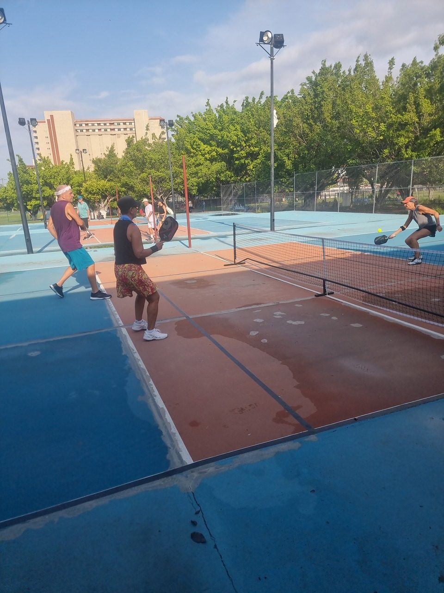

We played in Puerto Vallarta in September 2023, before the winter crowd arrives. Our main game was open play at Parque Parota — organised, well-attended sessions at 3.5–4.0 for around $3. It's been three years since we played, so we've rechecked the wider scene for 2026 and flagged what has changed.
Guide checked: October 2026 · Last played: September 2023

Parque Parota is a public park on Avenida Francisco Medina Ascencio, across the road from Villa del Palmar in the Hotel Zone, with pickleball running alongside its tennis courts.
We played open play here in September 2023. Sessions were well organised and well attended, with most games at a solid 3.5–4.0 level. Open play cost around $3 for two hours, and Friday was Margarita day.
The courts were decent but not great, and in September the daytime heat is serious — mornings are the time to play.
Our take: well-run 3.5–4.0 open play at a price that's hard to beat. The courts are only average, but the games and the value make up for it.
Parota is still listed as a public, pay-to-play venue. A 2024 report put open play at 9–11am for about MX$100, so expect prices and times to have moved on from what we paid. Check the current schedule on Playtime Scheduler or the Puerto Vallarta pickleball Facebook group before you go.
| Court quality | ★★★☆☆ |
| Quality of games | ★★★★☆ |
| Ease of joining | ★★★★☆ |
| Competitive level | ★★★★☆ |
| Value | ★★★★★ |
| Wanderers rating | 7/10 |
Would we go back? Yes. Open play at Parota was well organised and properly competitive at 3.5–4.0, and at around $3 for two hours the value was excellent. The courts are what hold the score back. Most North American players arrive in November and leave in March, so that's when you'll find the biggest sessions.
Makeshift pickleball courts with portable nets, set up on outdoor courts in the park. Dave joined games here in 2023 — not a dedicated venue, but a second place to find a game alongside Parota.
The largest pickleball setup in the Hotel Zone, at the Los Tules resort on Blvd. Francisco Medina Ascencio. It's listed with 8 lit outdoor courts, open 7am–8pm, on a pay-to-play basis at around MX$150, with games organised through Playtime Scheduler.
The Puerto Mágico shopping centre opened free public pickleball courts in 2023 — useful for a hit with your own group, though it isn't an organised open-play venue like Parota.
North of the airport in Nuevo Vallarta, two dedicated clubs have taken the scene beyond the city: Coco Beach with 8 outdoor courts and Pik N Pad with 6. Worth the trip if you're staying up the coast in Nuevo Vallarta or Bucerías.
Every court here is outdoors, and outside winter the daytime heat is hard going. Book morning sessions — or play under lights, as we did in Goa.
Most North American players arrive in November and leave in March. That's peak season for open play; September is hotter and quieter, though sessions at Parota were still well attended.
Times and prices have changed since 2023. Playtime Scheduler and the Puerto Vallarta pickleball Facebook group are the best places for current sessions.
Parota and Los Tules are both on Avenida Francisco Medina Ascencio, so a Hotel Zone base puts the two main open-play venues close together.
Puerto Vallarta gave us well-organised, competitive 3.5–4.0 open play at Parque Parota for a price that's hard to beat, on courts that were only average. The scene has grown since we played — more courts in the Hotel Zone, free courts at Puerto Mágico and dedicated clubs up the coast in Nuevo Vallarta — so a visiting 3.5+ player now has more options than we did. Our 2023 details are dated, so check current sessions before you travel. For other warm-weather winter stops, compare our Algarve, Hua Hin and Goa guides.